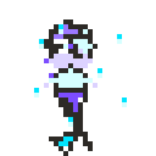
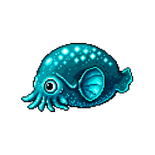
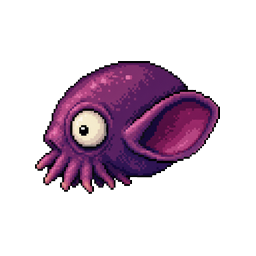
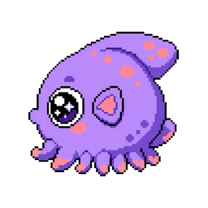

주머니귀오징어 · 펫 성체 시안
Rossia pacifica (Stubby squid) → 심해 펫 성체 스프라이트 후보 · 스테이징 (게임 미반영)
주머니귀오징어는 둥근 돔형 몸·큰 둥근 눈·귀 모양 지느러미·짧은 촉수가 특징인 북태평양 심해 두족류입니다.
능어와 동일하게 왼쪽 측면으로 그려 게임 내 좌우 왕복+반전 액션에 맞췄습니다.
생물 특징
학명 Rossia pacifica · 별칭 Stubby squid, 시계추귀오징어
몸길이 ~8–11cm · 진보라/청록 심해색 · 모래바닥에 숨어 사는 느린 유영
Nautilus Live 심해 영상에서 “장난감 인형 같다”고 유명해진 귀여운 외형
학명 Rossia pacifica · 별칭 Stubby squid, 시계추귀오징어
몸길이 ~8–11cm · 진보라/청록 심해색 · 모래바닥에 숨어 사는 느린 유영
Nautilus Live 심해 영상에서 “장난감 인형 같다”고 유명해진 귀여운 외형
기존 성체와 크기 비교

능어 (scruffy)

청령 (sparkle)

주머니귀 시안 2
디자인 후보 (게임 배경 위)

시안 1 · 심해 보라형
실제 심해 영상 톤 · 돔형 몸·큰 눈·귀 지느러미·짧은 촉수
← 왼쪽
오른쪽 →
시안 2 · 청록 발광형
게임 심해 팔레트 · 발광 점·청록 하이라이트
← 왼쪽
오른쪽 →

시안 3 · 츄비 귀여움형
큰 별눈·분홍 반점·다마고치풍 귀여운 성체
← 왼쪽
오른쪽 →
스프라이트: assets/custom/jumeoni-1..3.png (256×256 투명 PNG) · 능어 bbox 기준 정렬 · 내부 구멍 0
워크플로: GenerateImage 256px → prepare_staging_adult.py 최소 후처리